Clean Share is a privacy feature for Avast Cleanup on iOS that strips hidden metadata from photos before sharing them.
My role
Results
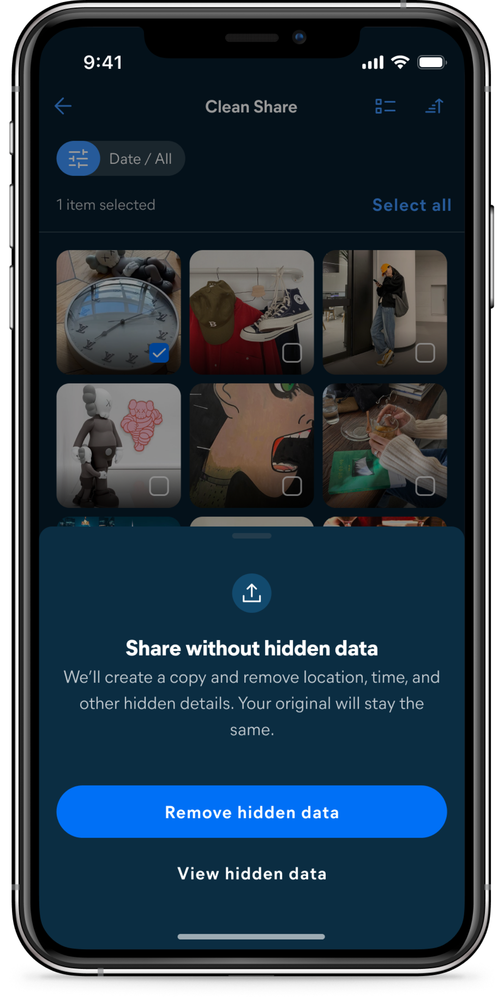
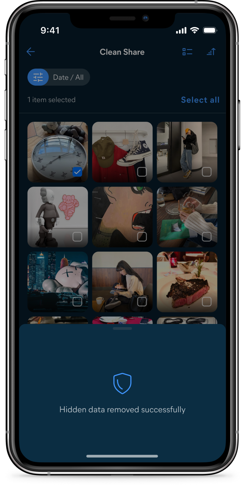
Only 1 in 10 users who installed Cleaner
ever came back.
Avast Cleaner helps iOS users remove duplicate photos, blurry shots, and junk files. The app does its job well — but that was the problem. Users would install it, clean their phone once, and leave. With day-one retention at 10% and declining from there, the issue wasn't quality. A cleaning app, by nature, solves a problem users only feel occasionally.
To build retention, we needed to give people a reason to return that didn't depend on their storage being full. The question became: what behavior do our users already perform every day that we could attach real value to?
Photos carry more information than most people realize, and most users have no idea.
Every photo taken on an iPhone stores metadata alongside the image: exact location, date, time, and the device it was taken on. This data travels invisibly with every photo that gets shared. When we looked at how users actually think about sharing risk, 74% said their main protection strategy was sharing only with people they trusted. The metadata exposure wasn't on their radar at all.
Our qualitative research confirmed it: users based their risk assessment entirely on their relationship with the recipient, unaware that a conversation could be hijacked, or that a photo could reveal their home address and daily routine to someone other than the intended recipient. When shown what their photos actually contained, two thirds rated automatic metadata removal as extremely or very valuable.
Sharing photos is something people do multiple times a day without thinking. That habitual behavior was exactly what we needed.
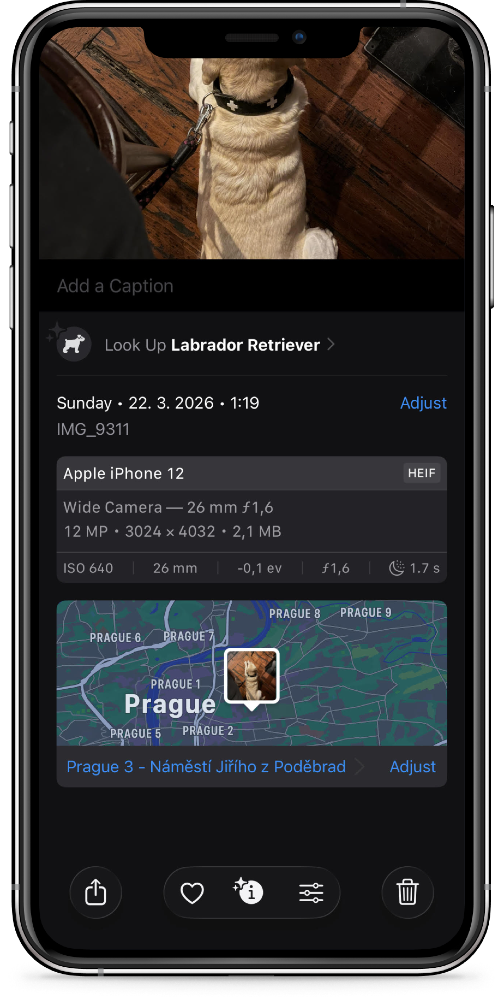
The original brief would have bloated the device every time the feature was used - the opposite of what Cleaner is for.
The initial product direction was broader: strip metadata from photos and save clean copies to the device, letting users decide what to do with them afterward. I pushed back on this. It introduced significant complexity — clean copies would need to be differentiated from originals, stored somewhere, managed over time. More importantly, it worked against the app's core purpose. Cleaner exists to keep a device lean and organized.
I made the case to narrow the scope to a single use case: sharing. Instead of saving cleaned copies to the device, we strip the metadata at the moment of sharing and send only the clean copy. The original stays untouched. This eliminated the storage problem entirely, aligned with Cleaner's existing purpose, and tied the feature to a behavior users already perform every day.
The threat needed to feel real before the solution could feel necessary.
For Clean Share to matter to users, they first had to understand what they were protecting themselves from. Most people had never thought about metadata — not because they don't care about privacy, but because the risk is completely invisible during normal use. The challenge was making it tangible without alarming people.
The onboarding opens with a photo overlaid with the data it silently carries: a precise street address, a date, a time, a device model. No abstract language — just the actual information that travels with every photo a user sends. Only after that does the solution appear. Leading with the feature would have felt abstract. Showing the metadata first makes the removal feel meaningful.
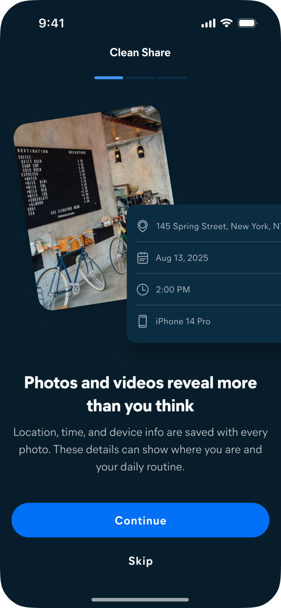
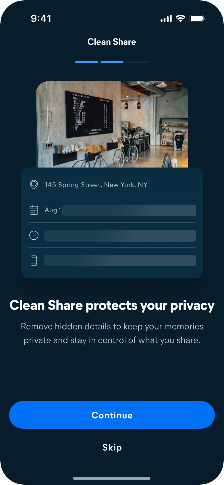
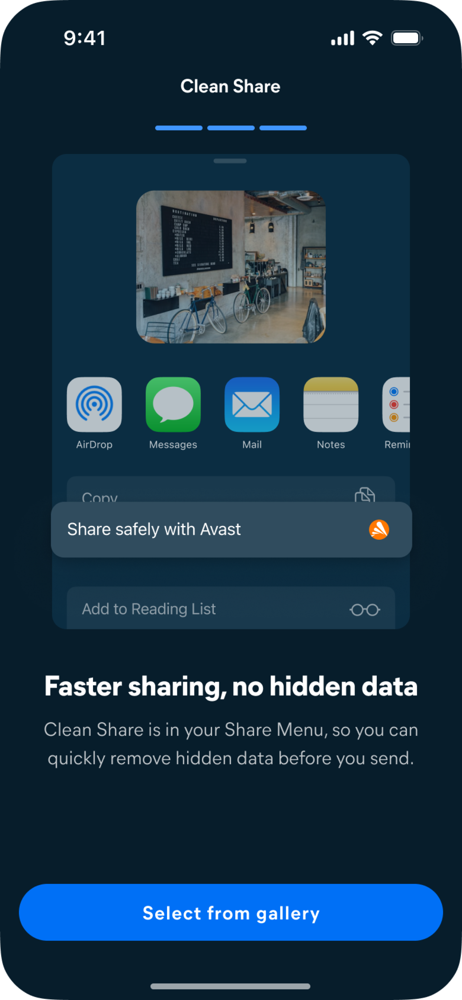
I wanted users to see exactly what was happening and what would happen next, at every step.
The in-app flow was designed around clarity of process. Users select photos, confirm through a bottom sheet that explains precisely what will occur — a clean copy will be created, hidden details removed, the original untouched — then watch the removal happen before the native iOS sharing sheet opens. Each state communicates its own stage in the sequence: selecting, confirming, removing, done.
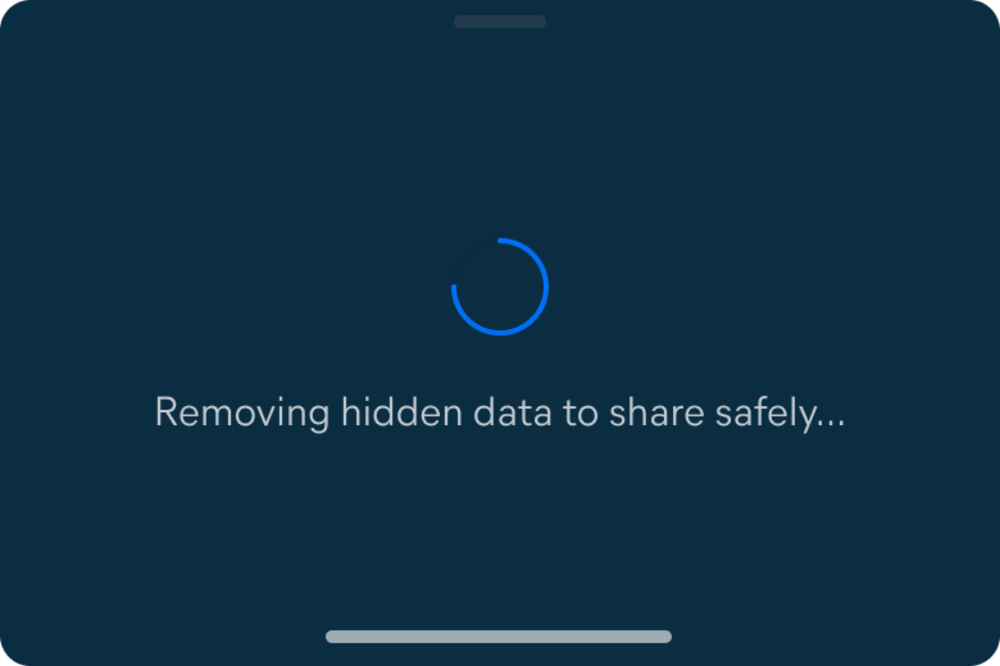
The "View hidden data" option in the confirmation sheet was included for the same reason as the onboarding: users who want to see what they're protecting themselves from can inspect the exact metadata before it's removed. Making this inspectable on demand reinforces why the action is worth taking, rather than asking users to trust a feature they can't verify.
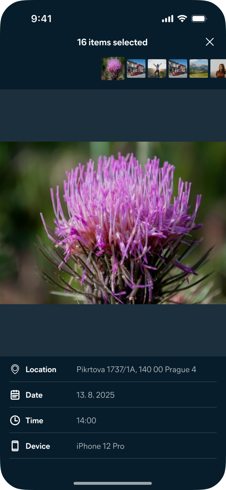

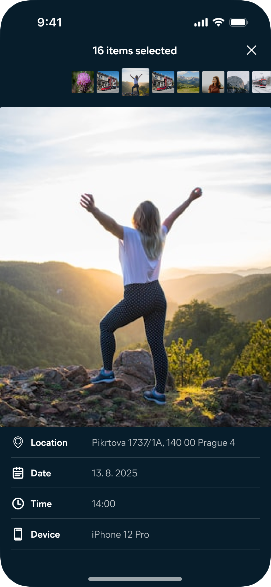
The in-app flow was always meant to be a bridge, not the destination.
The long-term goal was habitual use — not habitual use of the Cleaner app specifically, but habitual safe sharing from wherever photos actually live. The plan was to use the in-app experience to educate users and build familiarity with the feature first, then drive them toward the sharing extension — where Clean Share would be available directly inside the native iOS sharing sheet, without ever opening Cleaner. This transition was timed deliberately: immediately after a user successfully shares their first clean photo, a success screen introduces the extension as a faster path. The prompt is earned — it appears when the value of the feature has just been demonstrated, not before.
iOS extensions appear automatically in the system sharing sheet once the app is installed — but by default they land at the bottom of a long list, well below the actions users interact with regularly. For Clean Share to become habitual, it needed to be in the Favourites row at the very top, visible every time across every app on the system. This required a short one-time setup: open the share sheet, tap Edit Actions, and pin Clean Share to Favourites. We built a two-screen guided flow that walks users through each step, with a button that opens the share sheet immediately so the action can be completed in the same moment rather than remembered for later.
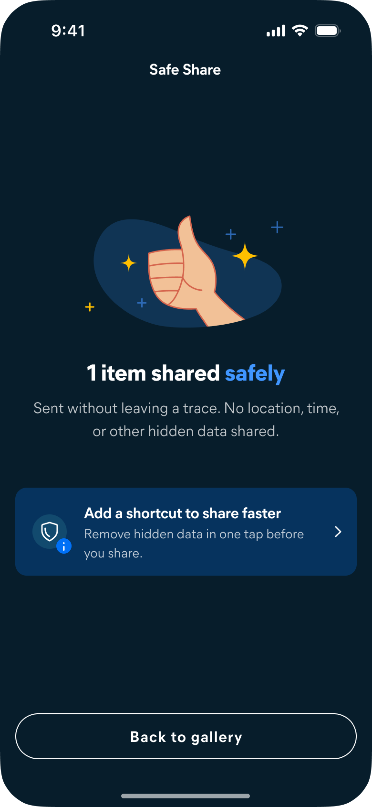
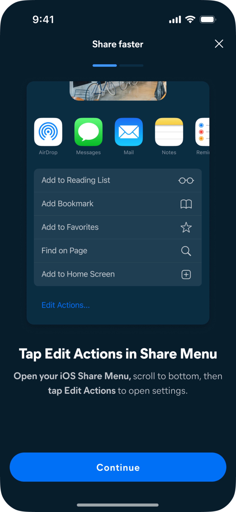
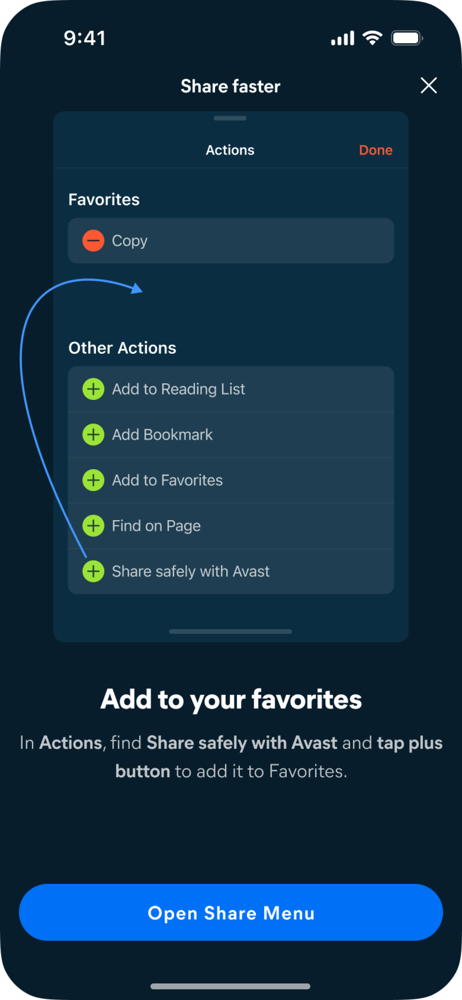
A feature that lives outside the app can easily make the app invisible.
Once users start sharing via the extension, they may never open Cleaner again. That's a success from a usage standpoint — but it creates a different problem: the app that built this capability disappears from view entirely. The success state in the extension was designed to address this directly.
After metadata is removed, the confirmation reads: "Hidden data removed successfully. Protected by Avast." The branding isn't decorative. It keeps the connection between the safe sharing action and the product that enables it explicit — building that association every single time the feature is used.
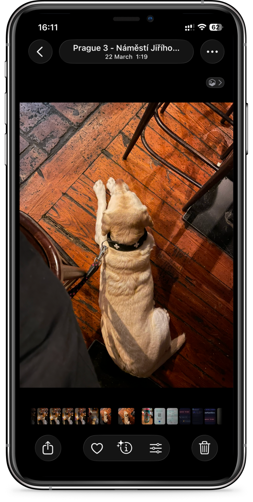
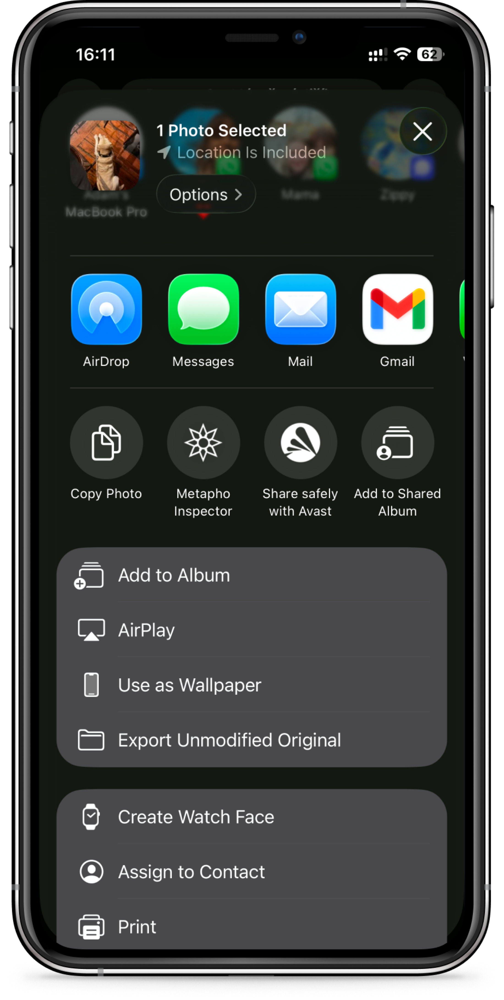
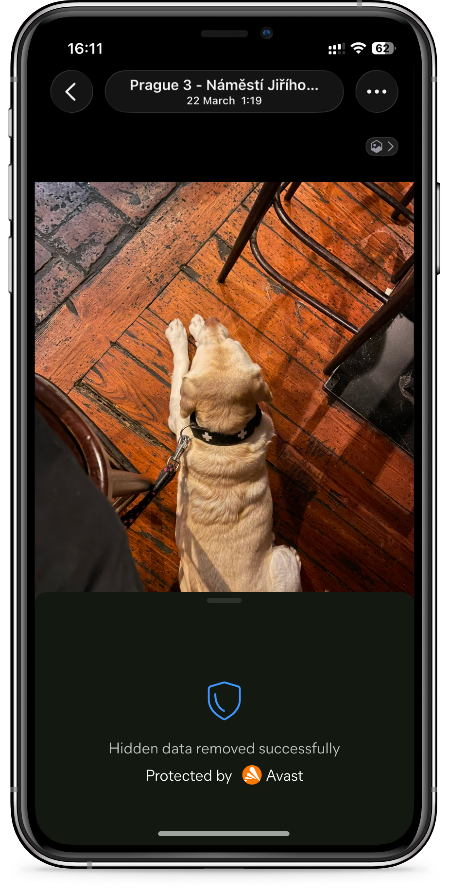
The goal was never to make users open Cleaner more often. It was to make Cleaner useful in a place they already were.
Clean Share is built on a deliberate assumption: that a habit formed outside the app is still a habit. Each time a user taps the extension in their share sheet, they're reminded that Avast is protecting them — not inside a utility they open once a month, but in a gesture woven into how they communicate every day.
Whether that assumption holds is something the data will eventually confirm. The design was built to give it the best possible chance.